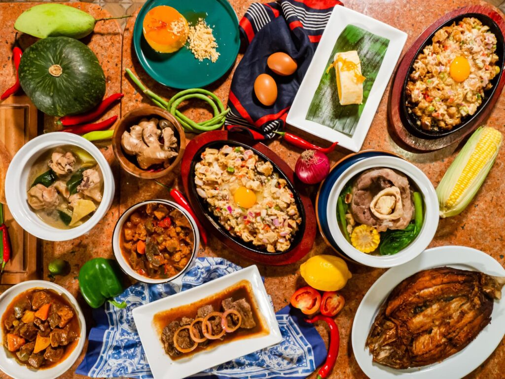
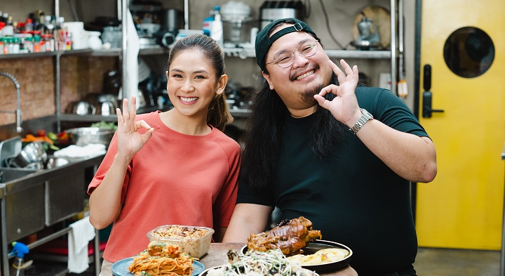
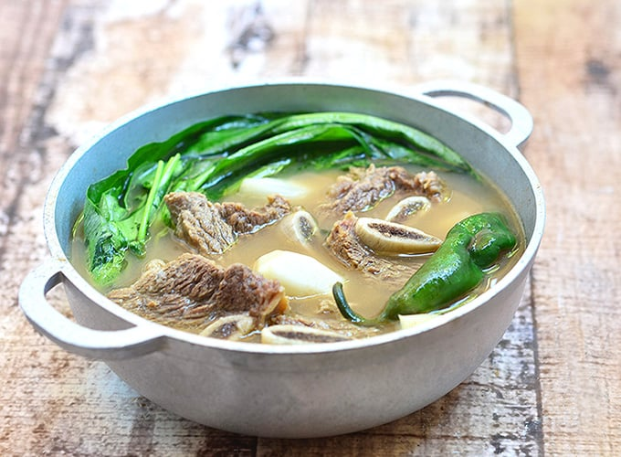
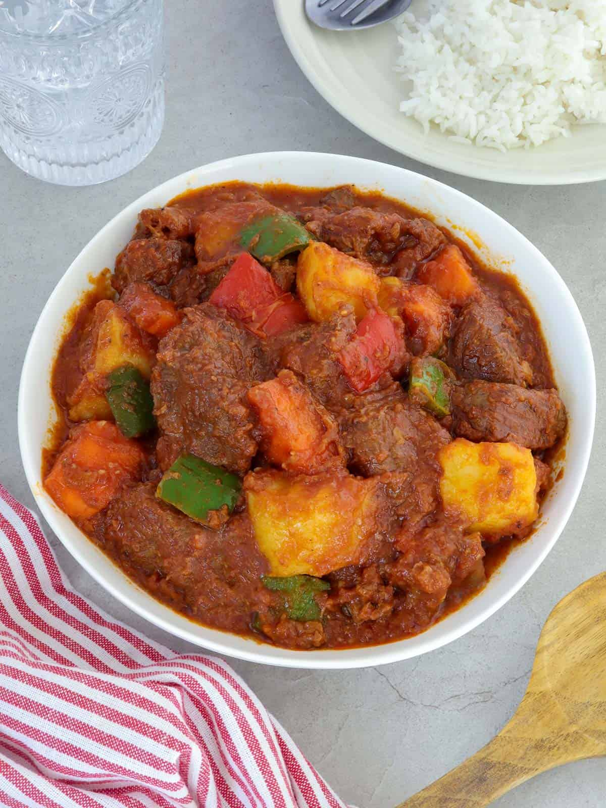
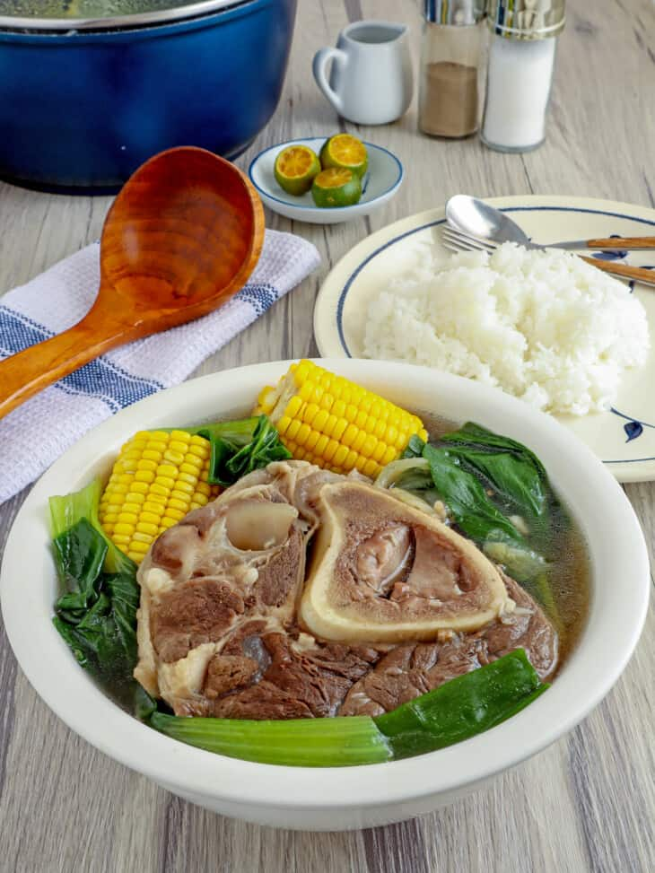
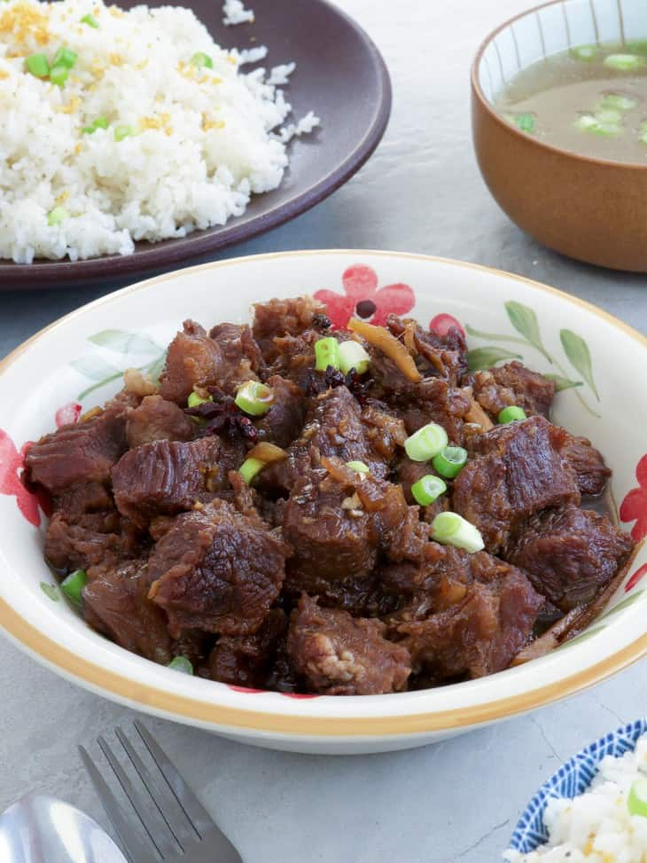
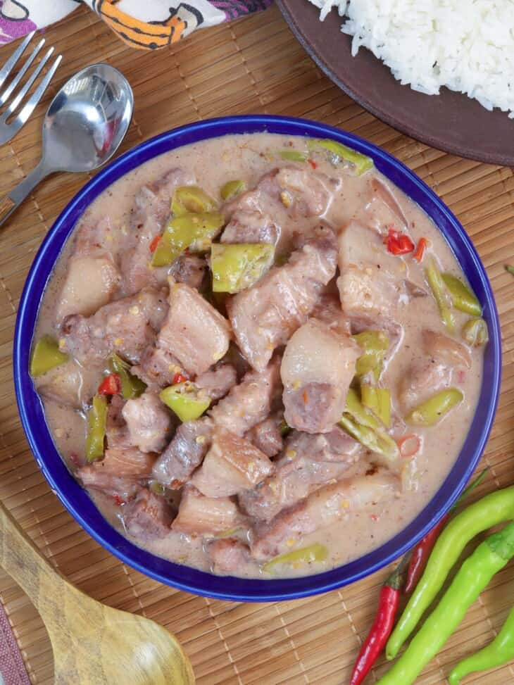
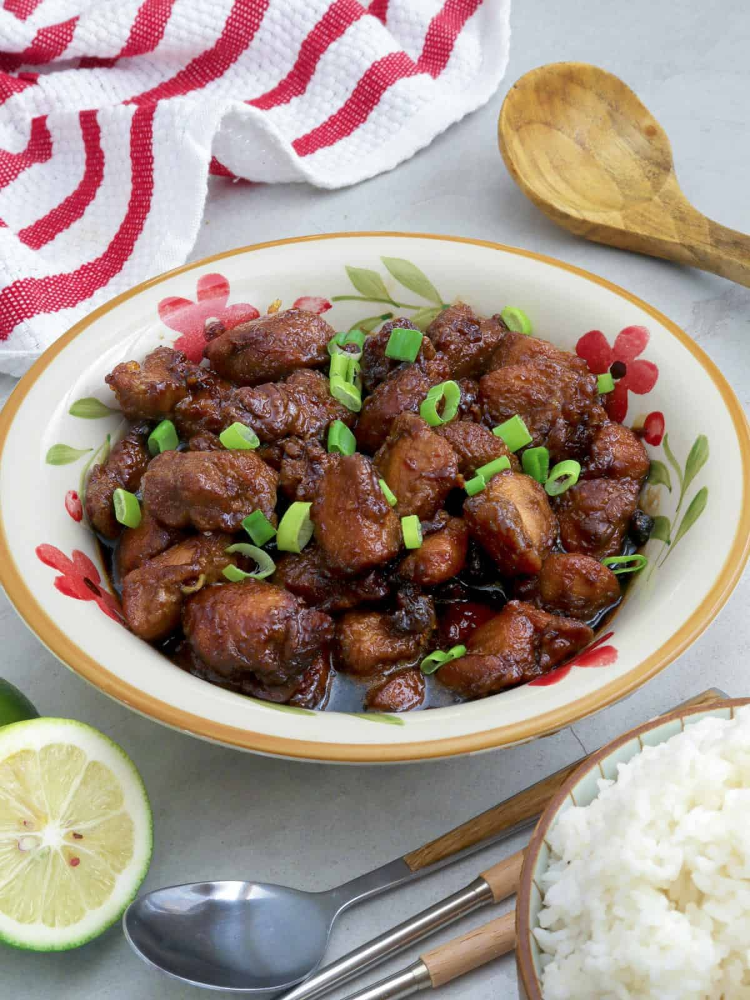

Filipino Cuisine
Filipino cuisine (Filipino: Lutuing Pilipino/Pagkaing Pilipino) is composed of the cuisines of more than a hundred distinct ethno-linguistic groups found throughout the Philippine archipelago. However, a majority of mainstream Filipino dishes that compose Filipino cuisine are from the cuisines of the Ilocano, Pangasinan, Kapampangan, Tagalog, Bicolano, Visayan (Cebuano, Hiligaynon and Waray), Chavacano and Maranao ethno-linguistic groups


How will you describe Filipino dishes?
Filipino food is a mixture of sweet, salty, and sour flavours. Rice figures heavily — this is Southeast Asia, after all! — and coconut is of utmost importance, with all parts of the coconut (including the sap and leaves) used in cooking and preparation.
most popularSud-an

Sinigang na Baka

Humba

Chicken Pochero

Beef Afritada
Philippine food gallery

Bulalo

Beef Pares

bistek

bicol Express

Garlic Chicken